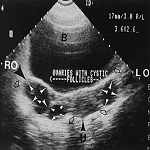

Community-based pharmacists' responsibilities include: checking and dispensing of prescription drugs, providing advice on drug selection and usage to doctors and other health professionals and counseling patients in health promotion, disease prevention and the proper use of medicines.[3] In most countries regulations govern how dispensaries may operate, with specific requirements for storage conditions, equipment and record keeping.
Dapiensociis Uses of Ultrasonography Ultrasound images are acquired rapidly enough to show the motion of organs and structures in the body in real time (as in a movie). For example, the motion of the beating heart can be seen, even in a fetus.
Ultrasonography is effectively used to check for growths and foreign objects that are close to the body’s surface, such as those in the thyroid gland, breasts, testes, and limbs, as well as some lymph nodes.
Ultrasonography is effectively used to image internal organs in the abdomen, pelvis, and chest. However, because sound waves are blocked by gas (for example, in the lungs or intestine) and by bone, ultrasonography of internal organs requires special skills. People who have been specifically trained to do ultrasound examinations are called sonographers.